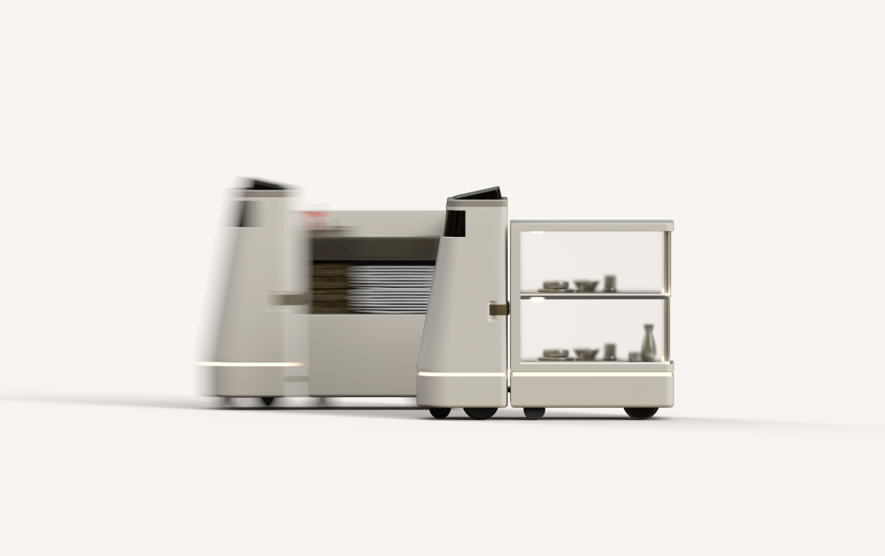
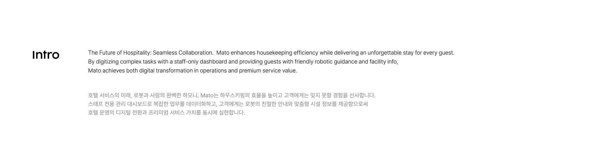
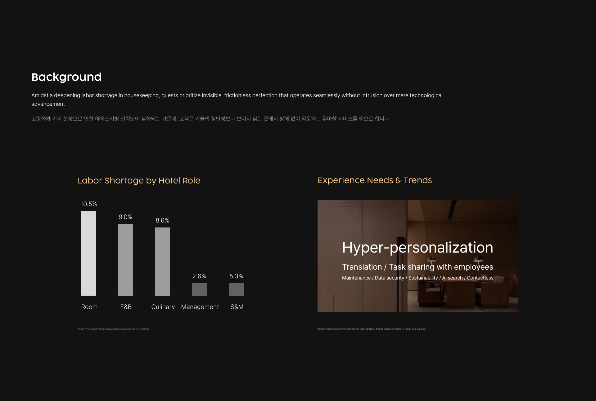
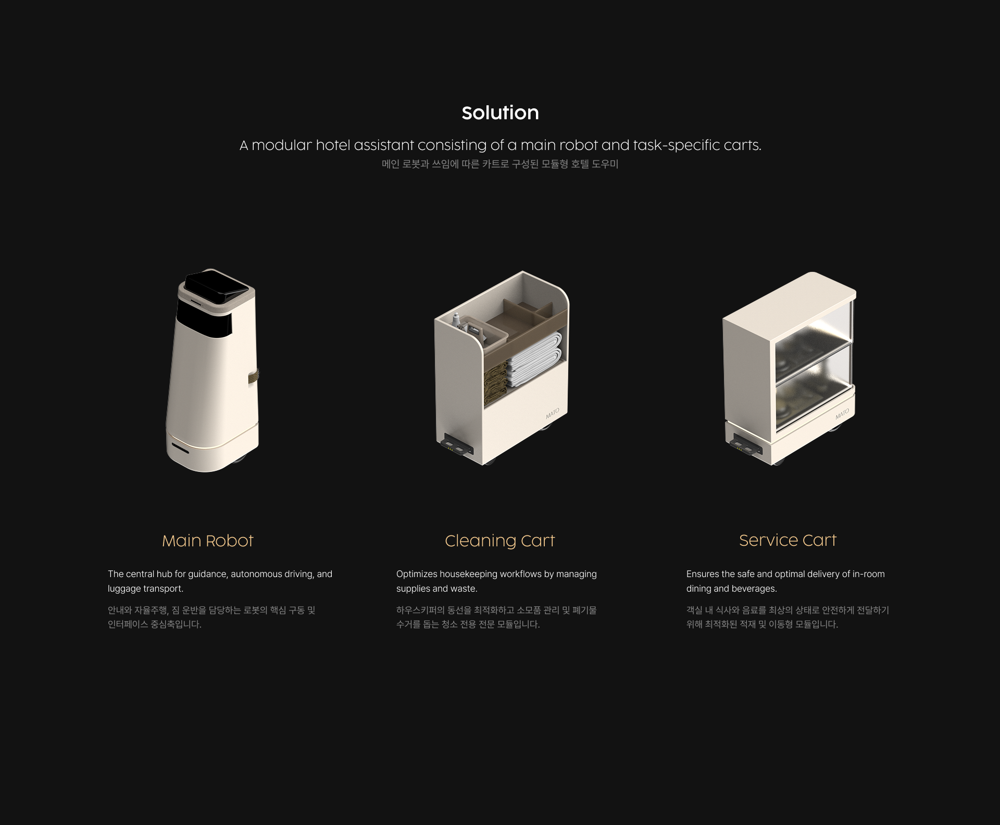
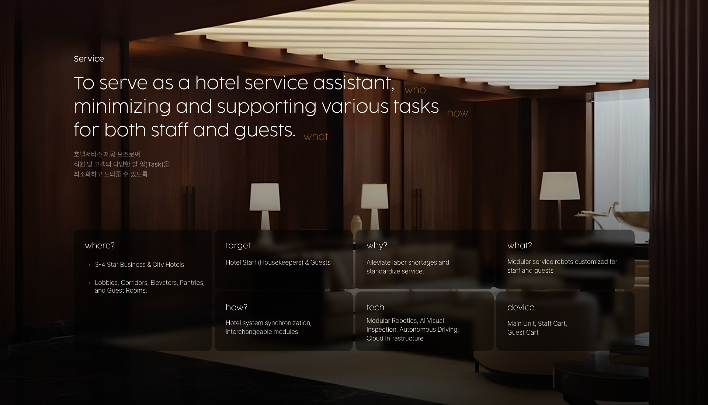
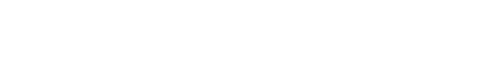
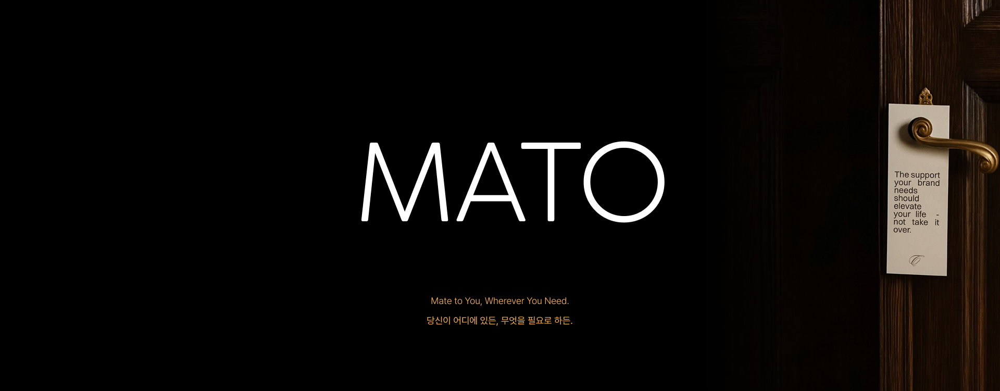
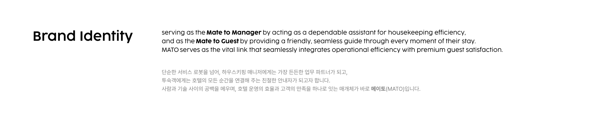
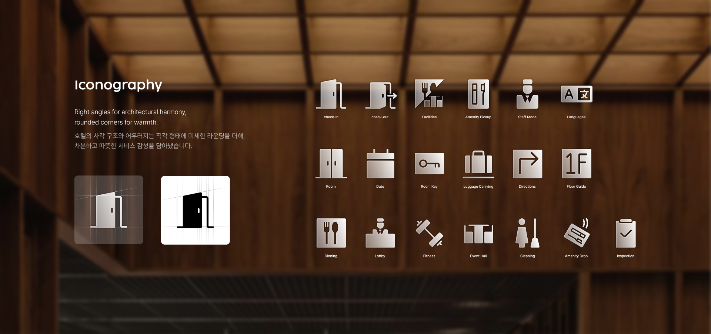
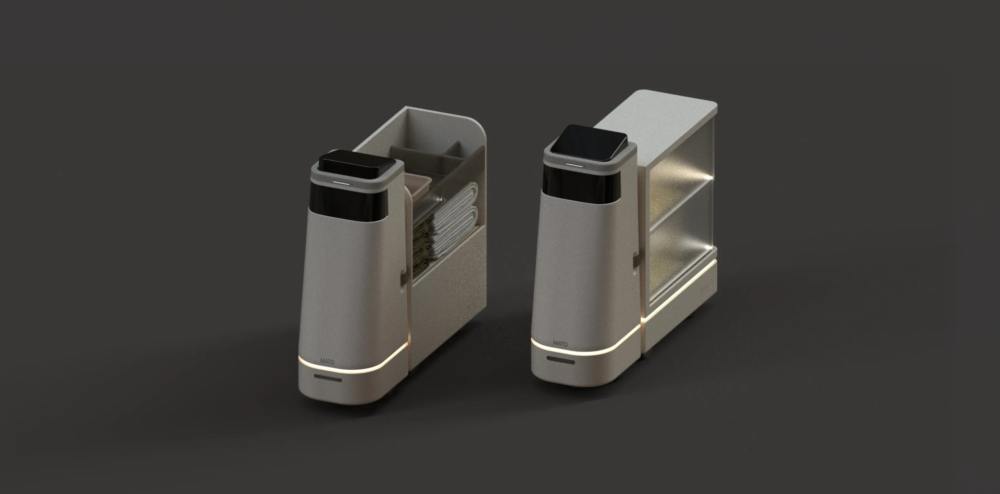
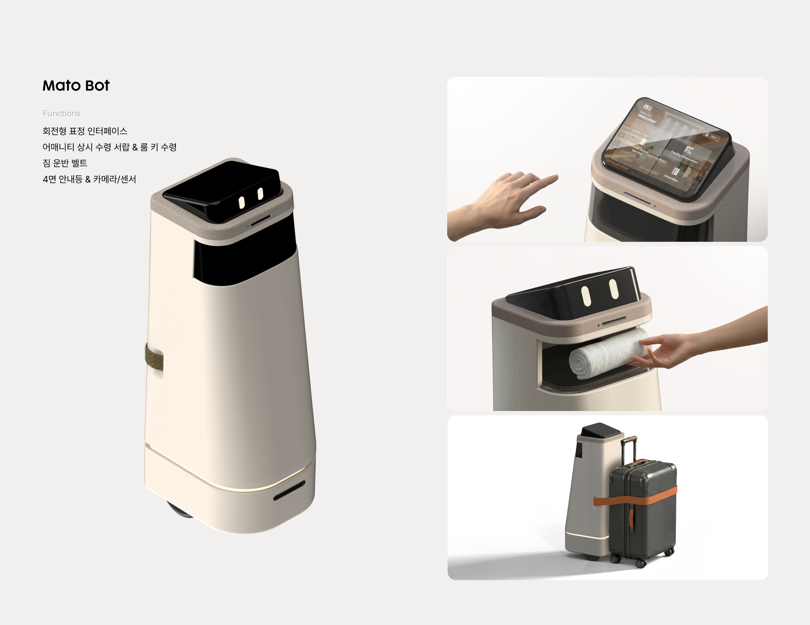
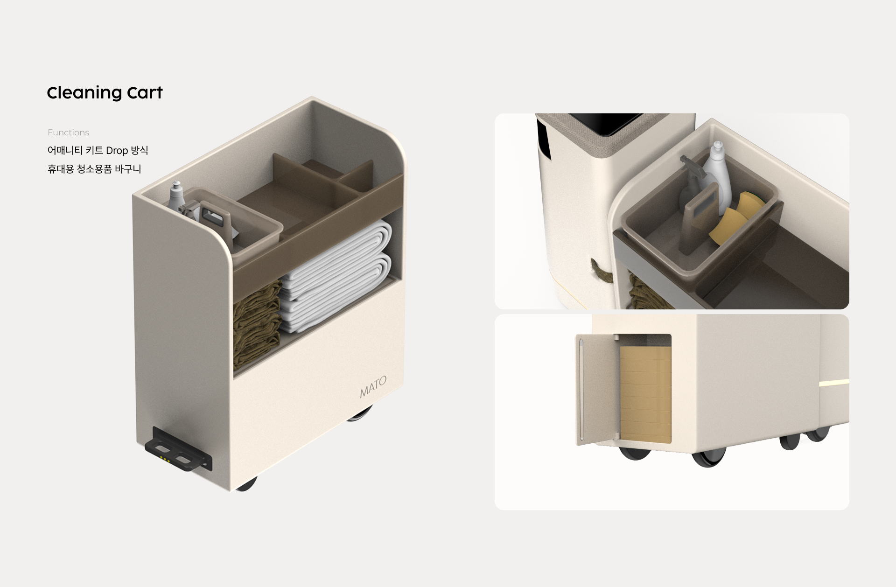
Hotel assistant, MATO
Mato는 하우스키핑의 효율을 높이고 고객에게는 잊지 못할 경험을 선사하는 호텔 어시스턴트 입니다. 호텔은 수많은 객실 관리로 인해 하우스키퍼의 노동 집약도가 매우 높습니다. 따라서 스태프 전용 관리 대시보드로 복잡한 업무를 데이터화하며 하우스키퍼의 일을 보조합니다. 또한 통합적이고 개인화된 비대면 서비스를 원하는 현대 투숙객의 니즈를 반영하여, 고객에게는 로봇의 친절한 안내와 맞춤형 시설 정보를 제공함으로써 호텔 운영의 디지털 전환과 프리미엄 서비스 가치를 동시에 실현합니다.